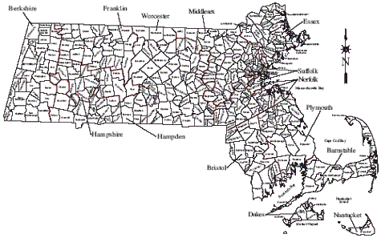

By County BarnstableBerkshireBristolDukesEssexFranklinHampdenHampshireMiddlesexNantucketNorfolkPlymouthSuffolkWorcesterRegional
By Name
A
Athol Orange Homeschoolers
B
Berkley Area HomeschoolersBerkshire HomeschoolersBillerica Homeschooling Association
Boston Area Homeschoolers' Queer-Straight Allianc
C
Coastal Free Learners
E
Essex County Inclusive Homeschool Group
G
Greater Lawrence Homeschoolers
H
Hampden County Homeschoolers
Haverhill Area Homeschool GroupHome School Meetups Group
I
INHARMONY Homeschool Network
J
The Journey - Tween to Teen Co-opJust Live Life
L
LEAF Home Learners Network
M
MA Salam HomeschoolersMAhomeschoolersMarlborough Mayflower Homeschool NetworkMerrimack Valley Home School Meetups MetroWest Homeschoolers
N
New England Buddhist HomeschoolersNewton HomeschoolerNorth Central Massachusetts Homeschool FriendsNorth Shore Christian Homeschoolers (NSCH)North Shore Young HomeschoolersNorth Suburban Home Learners
Nuts About Learning
O
Outside the Box Homeschoolers
P
Pioneer Valley Homeschool Group
P.L.A.N.T.
S
Salem MA Life Learners Discussion Group
Sharon Home Learners
South Shore Home LearnersSouthcoast Homeschoolers
TTri-County Homeschoolers
W
Western Mass Whole Life LearnersNo group close by? Join the MAhomeschoolers Yahoo group:

To add a support group listing to this page or to update one that is currently listed, click here to fill out a form.
Local Support Groups
These support groups are independently run; each has their own unique culture. We list them as a service to Massachusetts homeschoolers, but being listed here does not imply an endorsement by AHEM. AHEM reserves the right to remove a listing at any time. Don't see a group in your area? Start your own! For inspiration, see Why and How to Get Connected.

Barnstable County
Coastal Free Learners
URL: http://groups.yahoo.com/neo/groups/coastalfreelearners/info
Contact: Judith, hillhomeschoolers at gmail dot com
Area primarily served: Cape Cod and the Islands
Eligibility: All those who are homeschooling or are interested in homeschooling.
How to join: Just click on "join" for the yahoo group. Also, we have a Facebook Group under the name "Coastal Free Learners of Cape Cod."
Fee: No
Special focus: No special focus, broad-based membership
Berkshire County
Berkshire Homeschoolers
URL: http://groups.yahoo.com/group/BerkshireHomeschoolers/
Contact: Amy, amynajimy at yahoo dot com
Primary area served: Berkshire County
Eligibility: Anyone currently homeschooling or planning to home school their children
How to join: Go to the yahoo group and click to join adding a small sentence or two about yourself. The moderator will receive your message and approve you to join the group.
Fee: No
Special focus: No special focus, broad-based membership
Bristol County
Attleboro Area Homeschoolers
URL: http://groups.yahoo.com/group/AttleboroAreaHomeschoolers/
Contact: Carla, cjrissmeyer at gmail dot com
Area primarily served: Southeastern Massachusetts and Northern Rhode Island
Eligibility: Homeschooling families
How to join: Ask to join the Yahoo group. Tell about yourself.
Fee: No
Special focus: No special focus, broad-based membership
Berkley Area Homeschoolers
URL: http://groups.yahoo.com/group/BerkleyAreaHSers/
Contact: Pam, boltonpamela at yahoo dot com
Area primarily served: Berkley, Taunton, Fall River, Attleboro
Eligibility: Active homeschooling families
How to join: Ask to join the Yahoogroup. Tell about yourself, and or answer questions.
Fee: No
Special focus: No special focus, broad-based membership
Outside the Box Homeschoolers
URL: http://outsidetheboxhomeschoolers.wordpress.com/
Contact: Krysten, outsidetheboxhomeschoolers at gmail dot com
Area primarily served: South Coast Greater Fall River Area
Eligibility: Any homeschooling family
How to join: Send an email to outsidetheboxhomeschoolers at gmail dot com and we will add you to the group email list for announcements
Fee: No
Special focus: No special focus, broad-based membership
Southcoast Homeschoolers
URL: http://groups.yahoo.com/group/schomeschoolers/
Contact: Jessica, schomeschoolers at yahoo dot com
Area primarily served: Southcoast of MA (New Bedford area)
Eligibility: Anyone currently homeschooling or even thinking about starting.
How to join: Go to our Yahoo Group to apply.
Fee: No
Special focus: No special focus, broad-based membership
Dukes County
Essex County
Amesbury MA Homeschoolers Group
URL: https://www.facebook.com/groups/1414538995520945/
Contact: Heidi, heidimurphy07 at yahoo dot com
Area primarily served: Amesbury, MA
Eligibility: Anyone who is homeschooling or interested in homeschooling their children in the Amesbury MA area.
How to join: Just add yourself to the facebook group page (link above).
Fee: No
Special focus: No special focus, broad-based membership
Essex County Inclusive Homeschool Group
URL: https://groups.yahoo.com/neo/groups/EssexCountyInclusivehomeschoolinggroup/info
Contact: Laurel, essexcountyinclusivehomeschoolinggroup-owner at yahoogroups dot com
Area primarily served: North of Boston (Northshore) Essex County
Eligibility: Homeschoolers, and those interested in homeschooling
How to join: Send email to list owner.
Fee: No
Special focus: No special focus, broad-based membership
Greater Lawrence Homeschoolers
URL: http://groups.yahoo.com/group/GreaterLawrenceHomeschoolers/
Contact: Amy, Amyberard2002 at yahoo dot com
Area primarily served: Greater Lawrence, Massachusetts: Andover, N. Andover, Methuen, Salem, NH, Windham, Dracut
Eligibility: Any homeschooler in the Greater Lawrence, Massachusetts area
How to join: Visit our site and request membership.
Fee: No
Special focus: No special focus, broad-based membership
Haverhill Area Homeschool Group
URL: https://www.facebook.com/groups/335722683186135/
Contact: Amanda, jezilogan at gmail dot com
Area primarily served: Merrimack Valley, Haverhill, Lawrence, Andover, Groveland, Georgetown, North Andover, northern Essex county
Eligibility: Homeschool families in the region
How to join: Request to be added to the Facebook group. Be on the lookout for a message from an administrator confirming your interest.
Fee: No
Special focus: No special focus, broad-based membership
Home School Meetups Group
URL: http://groups.yahoo.com/group/hsmeetups/
Contact: Amanda, asuleski at gmail dot com
Area primarily served: Northern MA, Merrimack Valley area and Southern NH
Eligibility: Anyone who would like to or does home school
How to join: Request to join the Yahoo group.
Fee: No
Special focus: No special focus, broad-based membership
North Shore Christian Homeschoolers
URL: http://www.nschonline.org/
Contact: Marci, marcianth at aol dot com
Primary area served: North Shore: Hamilton, Wenham, Beverly, Danvers, Peabody
Eligibility: Homeschoolers or those considering homeschooling in the North Shore area..
How to join: Attend at least one support group meeting so we can meet you, then fill out the online membership profile, and pay yearly fee of $15,
Fee: $15/year
Special focus: The NSCH is a ministry whose leadership and direction is based on the Christian faith.
North Shore Young Homeschoolers
URL: http://groups.yahoo.com/group/nsyounghomeschoolers/
Contact: Rachel, ferrets at quiddity dot cc
Primary area served: North Shore (Beverly, Danvers, Salem, Peabody, etc).
Eligibility: All homeschoolers, though our activities are geared towards preschool and elementary school aged children.
How to join: Apply to join the Yahoo Group.
Fee: No
Special focus: No special focus, broad-based membership
Nuts About Learning
URL: https://m.facebook.com/groups/202309239950482/
Contact: Molly, mbelisle2 at hotmail dot com
Primary area served: North Shore of MA
Eligibility: Anyone interested in life learning/unschooling
How to join: Join us on Facebook, and then check your "other" folder for an introductory PM before approval.
Fee: No
Special focus: Open-minded unschooling
P.L.A.N.T
URL: http://www.meetup.com/Purposeful-Learning-Appreciating-Nature-Together-P-L-A-N-T/
Contact: Andrea,
plantfamilies at gmail dot com
Primary area served: Andover, Boxford, Georgetown, Groveland, Haverhill and surrounding Merrimack Valley community
Eligibility: Families of children in grades k-5
How to join: Please join us through Meet-Up..
Fee: No
Special focus: We are a group of purposeful homeschoolers who enjoy learning through nature together.
Salem MA Life Learners Discussion Group
URL: https://www.facebook.com/groups/418987084913393/
Contact: Erin, erinthehealer at gmail dot com
Primary area served: Salem, MA
Eligibility: Any homeschooling family living in Salem who is looking for support, a place to share resources, and talk with local parents.
How to join: Click "Join Group" on the Facebook page and the admin will add you.
Fee: No
Special focus: Salem homeschoolers
Franklin County
Athol Orange Homeschoolers
URL: http://groups.yahoo.com/group/AtholOrangeHomeschooling/
Contact: Jennifer, hsmom at plotner dot org
Area primarily served: Athol, Orange, Warwick, Erving, Gill, Royalston, New Salem, Wendell, Petersham, Phillipston, Winchendon, Gardner and Templeton
Eligibility: Anyone that homeschools or is thinking about homeschooling in the listed areas.
How to join: Join the Yahoo group.
Fee: No
Special focus: No special focus, broad-based membership
Hampden County
Hampden County Homeschoolers
URL: groups.yahoo.com/group/HCH/?tab=s
Contact: Marla, marlakraw at gmail dot com
Area primarily served: Westfield
Eligibility: Anyone interested in homeschooling.
How to join: Send an email and let us know about your homeschool interest.
Fee: No.
Special focus: No special focus, broad-based membership.
Hampshire County
Pioneer Valley Homeschool Group
URL: http://pvhg.net
Contact: Karen, ktwilrainbow at gmail dot com
Area primarily served: Pioneer Valley, Western Mass from CT to VT borders and beyond
Eligibility: Inclusive, eclectic network of over 200 secular homeschooling families since 2001. All are welcome!
How to join: Easy - just go to the face page at www.pvhg.net and follow the prompts
Fee: No.
Special focus: No special focus, broad-based membership.
Western Mass Whole Life Learners
URL: http://groups.yahoo.com/group/westernmasswholelifelearners/
Contact: Beryl, westernmasswholelifelearners-owner at yahoogroups dot com
Area primarily served: Pioneer Valley (Amherst, Easthampton, Florence, Granby, Hadley, Holyoke, Leverett, Northampton, Springfield, and all the surrounding areas.)
Eligibility: Homeschooling families in the area
How to join: Click join on yahoo group and reply to email that asks whether you homeschool and what town you are from.
Fee: No.
Special focus: No special focus, broad-based membership.
Middlesex County
Billerica Homeschooling Association
URL: http://www.billericahomeschooling.com
Contact: Amber, billericahomeschooling at live dot com
Area primarily served: Billerica, Burlington, Wilmington, Tewksbury, Tyngsboro, Lexington, Chelmsford, Dunstable, Acton, Groton, Littleton, Westford, Southern New Hamshire, Dracut.
Eligibility: Any family that is homeschooling or considering homeschooling
How to join: Join our yahoo group through link on our website or contact group founders for a group invitation.
Fee: $5/year per family
Special focus: No special focus, broad-based membership
Homeschooling Together
URL: http://www.homeschoolingtogether.org/
Contact: Peter, bermudes at verizon dot net
Area primarily served: Homeschooling Together is based in Arlington and surrounding communities, but draws members from a wide geographical area.
Eligibility: Anyone interested in actively exploring and/or joining and building our homeschooling community is welcome.
How to join: Homeschooling Together is an open support group. People are welcome to join at any time. All members are required to read and respect the operating principles detailed in our *Welcome to Homeschooling Together* document (which will be sent after you request a group invitation from the moderator); let us know a bit about yourself by completing a brief introductory information form; and complete an annual member survey. Contact Peter at bermudes at verizon dot net for more information.
Fee: No
Special focus: No special focus, broad-based membership
The Journey - Tween to Teen Co-op
URL: n/a
Contact: Melanie, townsendbrooklinehomeschool at gmail dot com
Area primarily served: Townsend, MA/Brookline, NH - all towns around Townsend, MA including Pepperell, Groton, Ashby, Lunenburg, Fitchburg, Nashua, NH, Greenville, NH, Wilton, NH and Milford, NH
Eligibility: Any homeschooler ages 11 and up. Members and parents are required to be respectful of all and open minded.
How to join: Contact group organizer with children's ages and a little about what you are looking for.
Fee: No
Special focus: No special focus, broad-based membership
Marlborough Mayflower Homeschool Network
URL:http://groups.yahoo.com/group/MarlboroughMayflowerHomeschoolNetwork/
Contact: Robin, robyn.ripley at gmail dot com
Area primarily served: Greater Marlborough area (Marlborough, Hudson, Southborough, Northborough, Sudbury, Boylston, etc.)
Eligibility: Families who homeschool their children for any variety of reasons and in any variety of styles! We accept and appreciate our neighbors' choices when it comes to the WHY and HOW of homeschooling.
How to join: Mainly we connect through our Yahoo Group - simply click "join" and tell us a little about yourself.
Fee: No
Special focus: No special focus, broad-based membership
Metrowest Homeschoolers
URL: http://groups.yahoo.com/group/mwhsers/
Contact: Cindy or Raffaella, mwhsers-owner at yahoogroups dot com
Area primarily served: Anywhere in metrowest Boston (Framingham being center of area)
Eligibility: Any home educator (or one looking to home educate) interested in activities, connections, and support in the Metrowest area.
How to join: Currently no physical group. We connect through the Yahoo group. Go to the Yahoo group site, read the description, and then click join.
Fee: No
Special focus: No special focus, broad-based membership
Nashoba Homelearners
URL: n/a
Contact: Kate, Kate.Wheeler at verizon dot net
Area primarily served: Acton, Boxborough, Carlisle, Concord, Harvard, Lincoln, Littleton, Maynard, Stow, Sudbury, Wayland & neighboring towns
Eligibility: Any local family interested in homelearning.
How to join: Contact Kate Wheeler via email, giving your name address and children's ages, and a brief introduction (a few words) about your interest in homelearning.
Fee: No
Special focus: No special focus, broad-based membership
Newton Homeschoolers
URL: http://groups.yahoo.com/group/NewtonHS/
Contact: Shim, NewtonHS-owner at yahoogroups dot com
Area primarily served: Newton and surrounding towns
Eligibility: Homeschooling parents or teens
How to join: Email list moderator through yahoogroups.com
Fee: No
Special focus: No special focus, broad-based membership
North Suburban Home Learners (NSHL)
URL: NSHLonline.org
Contact: Laura, bltwk at verizon dot net
Area primarily served: North Suburban Regions in Eastern Massachusetts
Eligibility: All homeschooling families are welcome to join.
How to join: Families may submit the membership form online and dues via paypal on our website or they may download and print the membership form from the website and mail it to the address provided on the form, along with a check to cover specified dues..
Fee: $15 annually
Special focus: No special focus, broad-based membership
Nantucket County
Norfolk County
Sharon Home Learners
URL: https://groups.yahoo.com/neo/groups/sharonhomelearners/info
Contact: Evelyn, ek2000 at comcast dot net
Area primarily served: Sharon, MA and surrounding communities
Eligibility: All those who are homeschooling or are interested in homeschooling.
How to Join: sharonhomelearners-subscribe@yahoogroups.com
Fee: No
Special Focus: No special focus, broad-based membership
Tri-County Homeschoolers
URL: https://sites.google.com/site/tricountyhomeschoolers/
Contact: Nancy, Nanlalakidis at gmail dot com
Area primarily served: Norfolk, Worcester, and Middlesex Counties
Eligibility: Anyone in the Tri-County area
How to join: Go to http://groups.yahoo.com/group/Tri-county_Homeschoolers/ and join.
Fee: No
Special focus: No special focus, broad-based membership
Plymouth County
Just Live Life
URL:
Contact: Marcia, marsi77 at aol dot com
Area primarily served: Southeastern Massachusetts
Eligibility: Unschoolers and mindful parents, who don't feel the need to follow a curriculum but who learn as they live with the whole world at their fingertips.
How to join: Send an email to join and tell about yourself and why you want to join the group.
Fee: No
Special focus: Unschooling
South Shore Home Learners
URL: http://groups.yahoo.com/group/SSHLSupport/?yguid=405099847
Contact: southshorehomelearners at gmail dot com
Primary area served: South of Boston
Eligibility: South Shore Home Learners was founded in 2003 by a small group of families who share the following values regarding education and parenting: Education: We believe in home-based learning. As a group we do not endorse any one resource, method or philosophy of home-based learning over another. Parenting: We believe in the ideals of attachment parenting, including being emotionally responsive and maintaining positive discipline.
How to join: Visit the yahoo group http://groups.yahoo.com/group/SSHLSupport/?yguid=405099847
Fee: Free to Join Yahoo support group, but for full member benefits and privileges there is a fee of $30 for new members, $25 for renewals.
Special focus: Attachment parenting
Suffolk County
Hub Homeschoolers
URL: http://groups.yahoo.com/group/hubhomeschoolers/
Contact: Tonya, tedescokid1 at yahoo dot com
Area primarily served: Boston - West Roxbury, JP, Roslindale, Hyde Park
Eligibility: Any homeschooling family (considering or active)
How to join: Email list owner
Fee: No
Special focus: No special focus, broad-based membership
Winthrop-East Boston Homeschoolers
URL: n/a
Contact: Robert, robertwholzbach at yahoo dot com
Area primarily served: East Boston, Winthrop, Revere
Eligibility: Any and all!
How to join: Email
Fee: No
Special focus: No special focus, broad-based membership
Worcester County
Central Mass Christian Homeschool Co-op
URL: http://centralmasschristianhomeschool.net
Contact: Linda, centralmasschs at gmail dot com
Area primarily served: Hudson, MA and surrounding towns
Eligibility: Christian Homeschoolers
How to join: Fill out application, signed statement of faith. We accept applications year round but only have September admissions. Cut off is July 15.
Fee: $40 family/year
Special focus: We are a christian, enrichment based group that exists to glorify God, support homeschooling parents, and create relationships for our children.
LEAF Home Learners Network
URL: http://groups.yahoo.com/group/LEAF-Network/
Contact: LEAF-Network-owner at yahoogroups dot com
Area primarily served: South-central Massachusetts, northern Rhode Island, and northeastern Connecticut
Eligibility: LEAF members must be either current homeschoolers, of any educational philosophy, or families considering homeschooling. Members may not be non-homeschooling third parties, such as representatives of commercial ventures, curriculum vendors, or administrators of non-profit educational groups.
How to join: Request membership through the Yahoo Group and return answers to questionnaire to be reviewed for approval. Any subscribers to the Yahoo Group who do not complete and return the questionnaire will not be able to access the group.
Fee: No
Special focus: No special focus, broad-based membership
North Central Massachusetts Homeschool Friends
URL: http://groups.yahoo.com/group/ncmahomeschool_friends/
Contact: Lauren, jlsbeland at yahoo dot com
Area primarily served:
North Central Massachusetts including but not limited to: Gardner, Westminster, Phillipston, Petersham, Ashburnham, Athol, Orange, Royalston, Templeton, Fitchburg, Barre, Leominster
Eligibility: We welcome all types of homeschoolers and unschoolers. This group is about fun and socializing for our children and their parents. We are starting this group in hopes of finding other homeschoolers interested in hanging out and having fun. Our children do plenty of "learning" at home and need a chance to get out and just have fun with other kids. So please join us in our quest for fun.
How to join: Subscribe to: NCMAhomeschool_friends-subscribe@yahoogroups.com.
Fee: No
Special focus: No special focus, broad-based membership
Worcester Home Educators’ Network (WHEN)
URL: http://groups.yahoo.com/group/WorcesterHEN/
Contact: Yonit, WorcesterHEN-owner at yahoogroups dot com
Primary area served: Greater Worcester area
Eligibility: Anyone interested in homeschooling in the greater Worcester area.
How to join: Members sign up for the e-mail list through the yahoo groups site and must state why they want to join. All new members are generally approved within 24 hours.
Fee: No
Special focus: No special focus, broad-based membership
Regional
Boston Area Homeschoolers' Queer-Straight Alliance
URL: http://bahsqsa.wordpress.com/
Contact: Abigail, bahsqsa at gmail dot com
Area primarily served: Greater Boston area
Eligibility: Homeschooling teens in the Boston Area.
How to join: Contact us at the email address we listed.
Fee: No
Special focus: The Boston Area Homeschoolers QSA (BAHS), is a safe and enjoyable environment where teens organize events and vocalize LGBTQ issues. We will work to educate people inside and outside the homeschooling community and create a fun and supportive group.
INHARMONY Homeschool Network
URL: http://groups.yahoo.com/group/INHARMONYHomeschoolNetwork/
Contact: INHARMONYHomeschoolNetwork-owner at yahoogroups dot com
Area primarily served: Massachusetts
Eligibility: Anyone who homeschools in MA
How to join: Join the Yahoo group
Fee: No
Special focus: Nature but anything can be discussed as long as it is respectful :)
MA Salam Homeschoolers
URL: http://groups.yahoo.com/group/MASalamHSers/
Contact: Nadia, osmosismom at gmail dot com
Area primarily served: New England
Eligibility: This support group is specifically for Muslim homeschoolers in the area, but of course anyone is welcome!
How to join: Just become a Yahoo member and then post your introduction.
Fee: No
Special focus: Muslim homeschoolers
MAhomeschoolers
URL: http://groups.yahoo.com/group/MAhomeschoolers/
Contact: MAhomeschoolers-owner at yahoogroups dot com
Area primarily served: Massachusetts
Eligibility: Everyone
How to join: Just join the Yahoo-group
Fee: No
Special focus: Homeschooling in Massachusetts
NE Buddhist Homeschoolers
URL: http://groups.yahoo.com/group/NEBuddhistHomeschool/
Contact: Harriet, NEBuddhistHomeschool-owner at yahoogroups dot com
Area primarily served: New England
Eligibility: Homeschooling buddhists, Buddhists considering homeschooling, and Homeschoolers considering buddhism
How to join: Join on the yahoo group page, sending an intro to the group owner.
Fee: No
Special focus: Buddhism and homeschooling